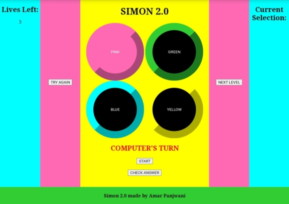
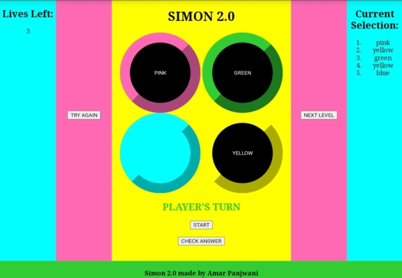
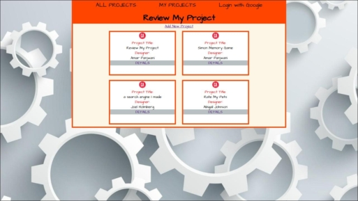
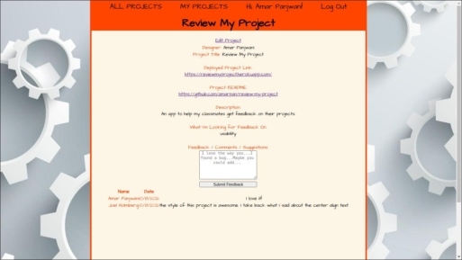
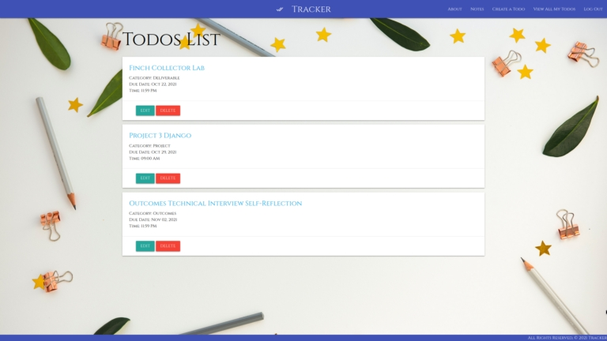
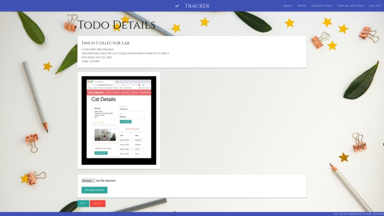
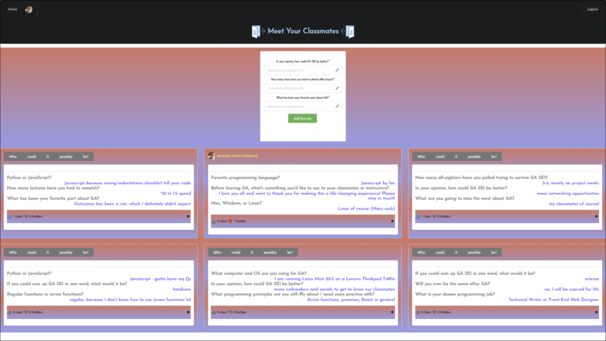
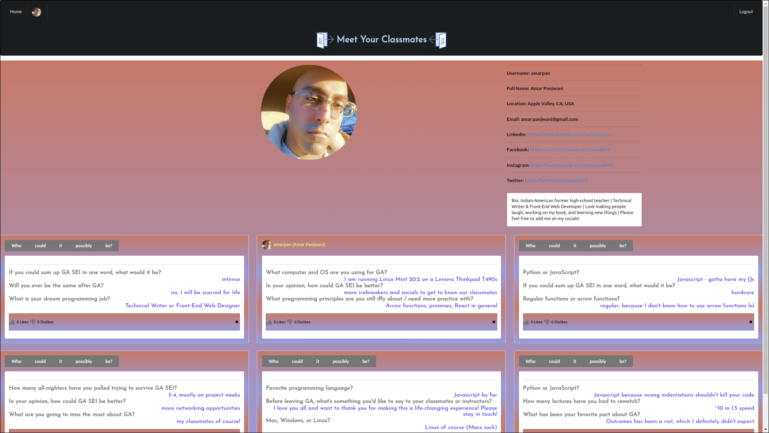

Skills
Languages: JavaScript, Python, Java, C++, HTML, CSS, NASM Assembly
Web & CSS Frameworks: Node.js, Express, Django, Google Materialize, Semantic UI
Databases: MongoDB, PostgreSQL
Tools: VS Code, Slack, Zoom (very comfortable working remotely)
My Projects
Simon Memory Game
A remake of the 90s classic that tests your ability to match an ever-increasing pattern with the computer.Made with vanilla Javascript, HTML, CSS Flexbox & Grid
Deployed via GitHub Pages
Click here to play
Click here to view documentation


Review My Project Hub
A hub to post your bootcamp projects and get feedback on them from peers and teachers.Made with Node.js, Express, MongoDB, Mongoose ODM, Google Oauth, Javascript, HTML, CSS
Deployed via Heroku
Click here to play
Click here to view documentation


Tracker
A hub for GA bootcamp students to track their homework assignments and corresponding due dates.Made with Python, Django, PostgreSQL, AWS S3
Deployed via Heroku
Click here to play
Click here to view documentation


Meet Your Classmates
An Instagram clone and hub to get to know your classmates via completion of short 3-question mini-surveys.Made with the MERN Stack (MongoDB, Express, Node.js, React) and JWT Auth
Deployed via Heroku
Click here to play
Click here to view documentation

